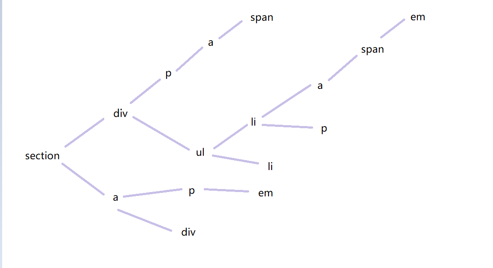

权重值
| 选择器 | 权重值 |
|---|---|
| !important | infinity |
| 行间样式 | 1000 |
| id选择器 | 0100 |
| class 选择器、属性选择器、伪类 | 0010 |
| 标签选择器、伪元素 | 0001 |
| 通配符选择器 | 0000 |
权重并不是真的1,10,100
他们不是10进制而是至少256进制
可以看看这里,有个小demo
我们甚至可以将三种引入方式进行比较最后结果是:行间样式 > 内部CSS > 外部CSS
那么权重相同会怎么样呢?
谁在后面就是显示谁(相同效果的后面的覆盖前面的),下面效果都是控制颜色,显示蓝色
1 | li {color：red;} |
权重计算

计算方式是组合选择器中所有单个选择器(上表有的)权重之和.
像〜，>和+之类的组合符号对权重没有任何影响.
例子中的权重都是2,谁在后面就是显示谁(后面的覆盖前面的)
1 | ul> li {color：red;} 0-0-2 |
分组选择器中不能把不同组的加在一起,只能组内相加.
1 | div, 0-0-1 |
计算机中无穷加一会比无穷大,所以!important也能参与计算
下面看几个例子:
1 | <div class="classDiv" id="idDiv"> |
1 | .classDiv #idP{ |
都是110,所以红色
1 | #idDiv > .classP{ |
>符号没影响,还是绿色
1 | #idDiv > p.classP{ |
上面增加了一个p,变成了111,所以红色
1 | #idDiv p.classP{ |
权重都是111
1 | div p.classP{ |
正无穷+12 比 正无穷+11 大,所以绿色
CSS3中有一个特殊选择器：not（x）：否定选择器没有值,其中的x(选择器)有值
CSS从右解析

先找到li再找ul,从右开始找(这是最快的)
1 | ul> li {color：red;} |